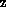
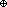

The table contains the following data for each of the 45
nonabelian groups G of order at most 30:
- the order |G| and, where appropriate, name of G.
- a 3-presentation <x|r|s> for
G. It is given using the convention that
- the first generator in x is denoted by x,
the second generator is denoted by y, the third generator (if
exists) is denoted by z;
- the first relator in r is denoted by a,
the second relator is denoted by b, the third by c
and so on.
- the rank dim
 of the free abelian group underling the module of
identities =2K(x,
r).
of the free abelian group underling the module of
identities =2K(x,
r).
- a set v of elements in r
ZG that generates a ZG-submodule ' isomorphic to the ZG-module .
- the integral homology group Hn(G)=Hn(G,Z)
for n=1,2,3.
How to use the table?
The main table